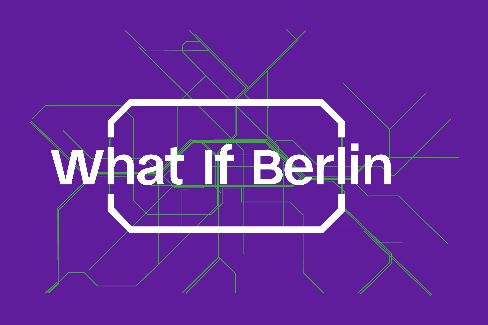
What If Berlin?
2026 / Berlin, Germany / Berliner Festspiele

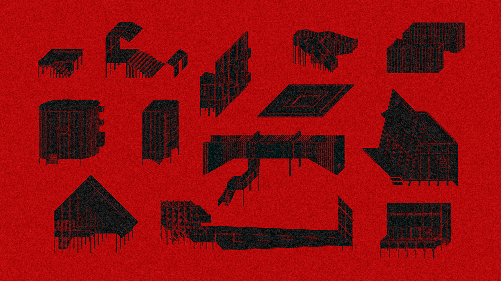
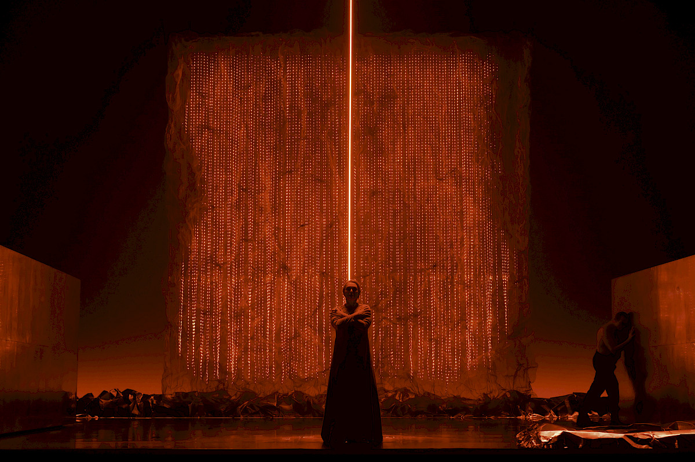

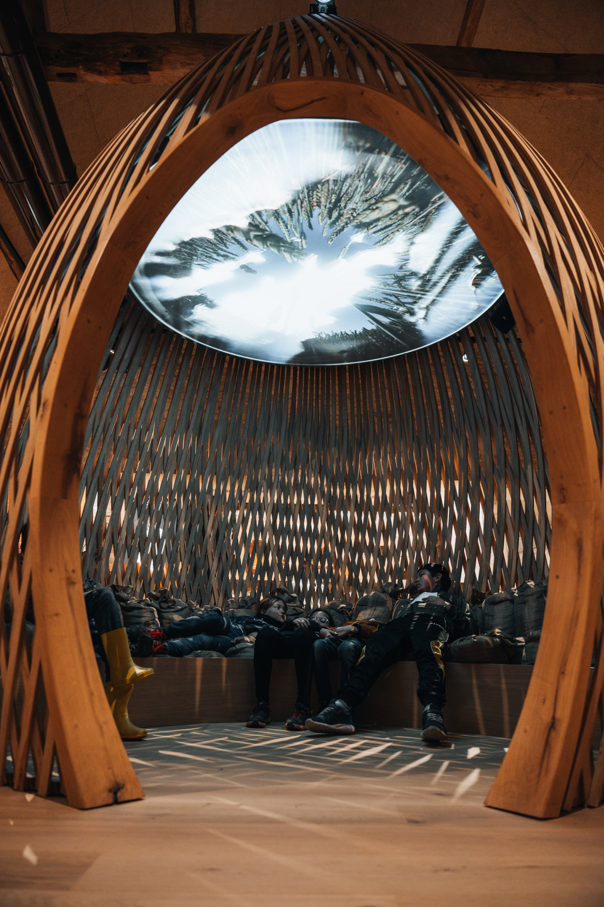
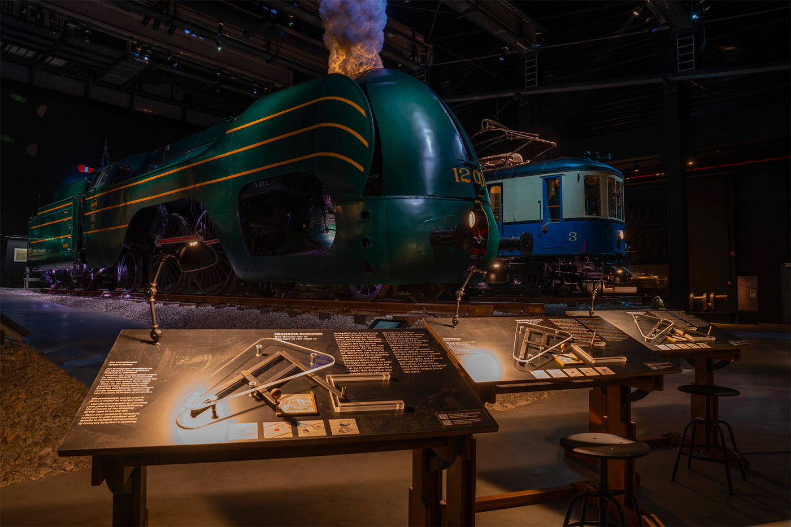
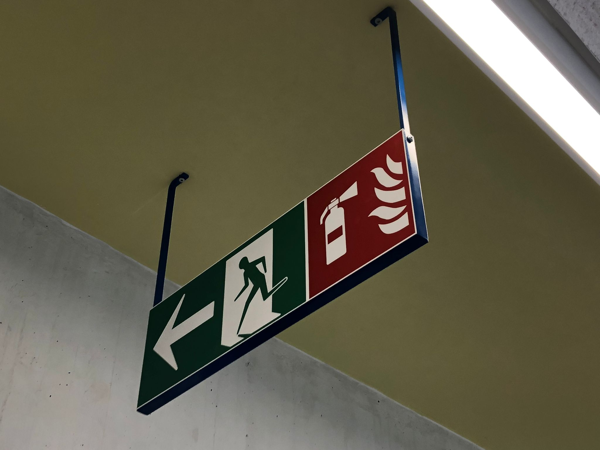
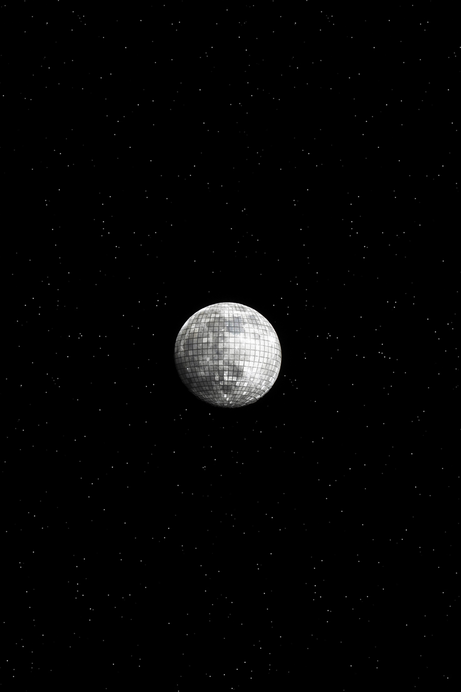
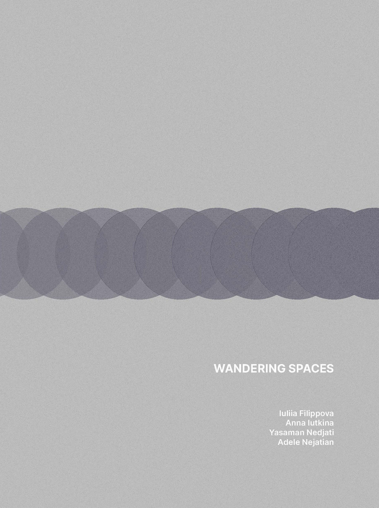

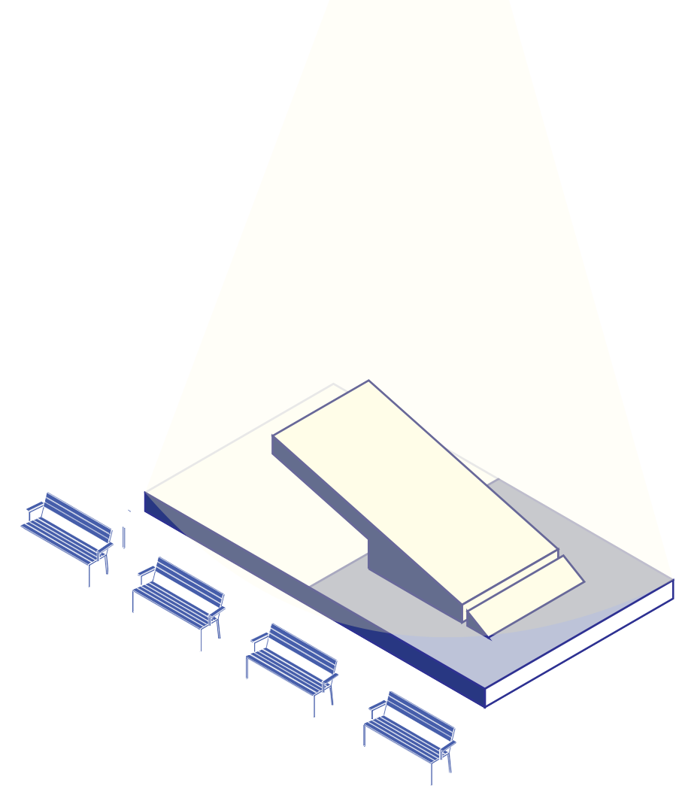
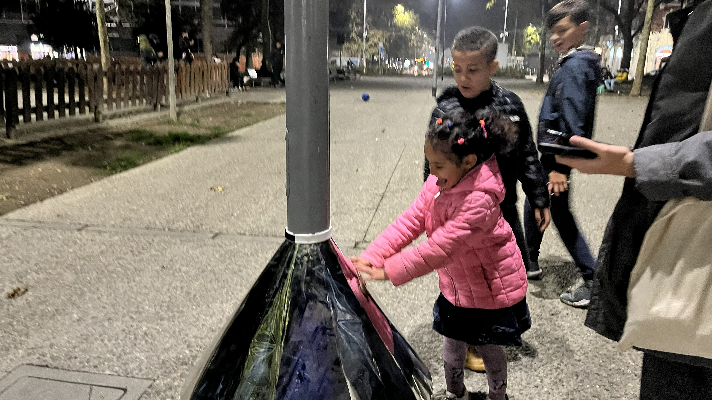
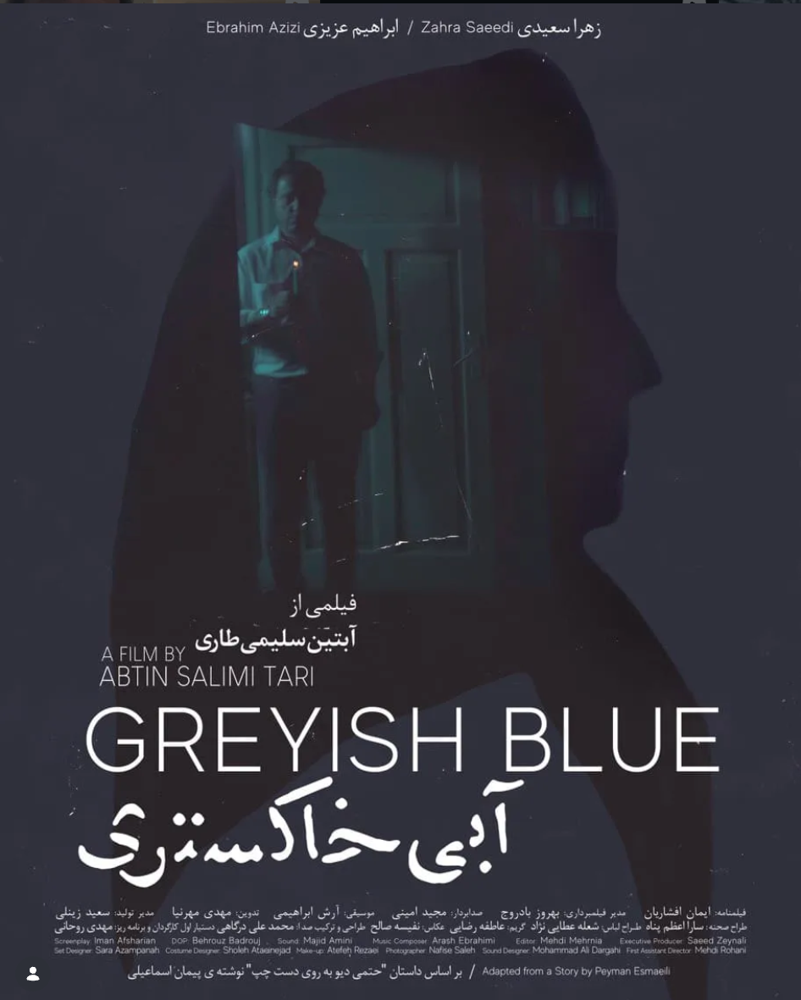
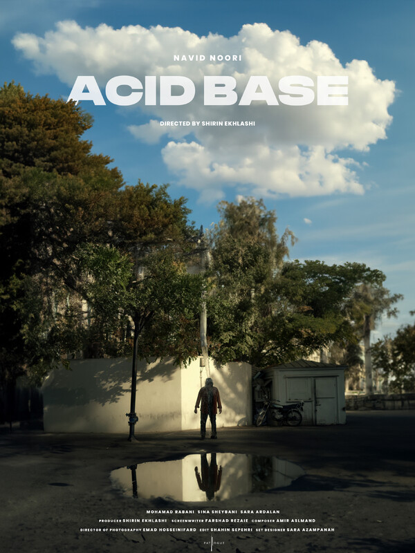

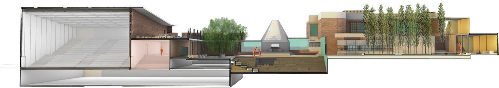
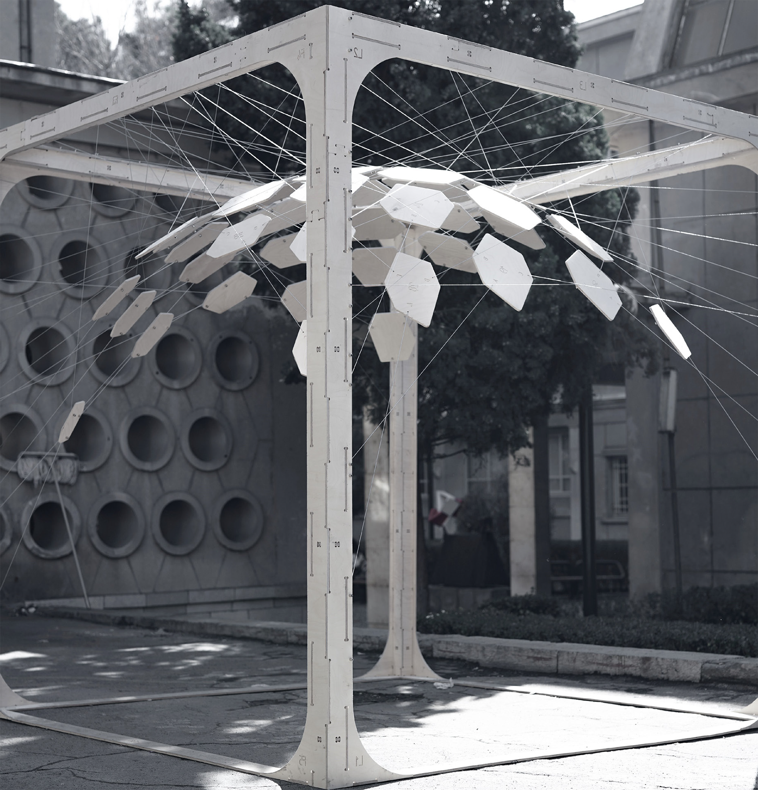
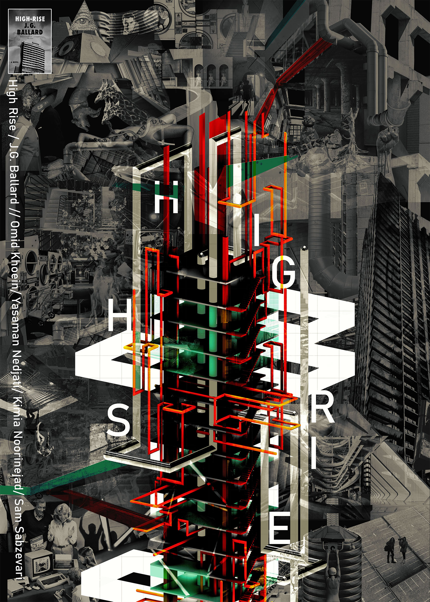
I work across architecture, scenography, and design. I'm interested in how people experience space, especially in cities, and how stories can change the way a place is perceived. For me, projects are often a way to investigate a question and understand a subject rather than arrive at a fixed answer.